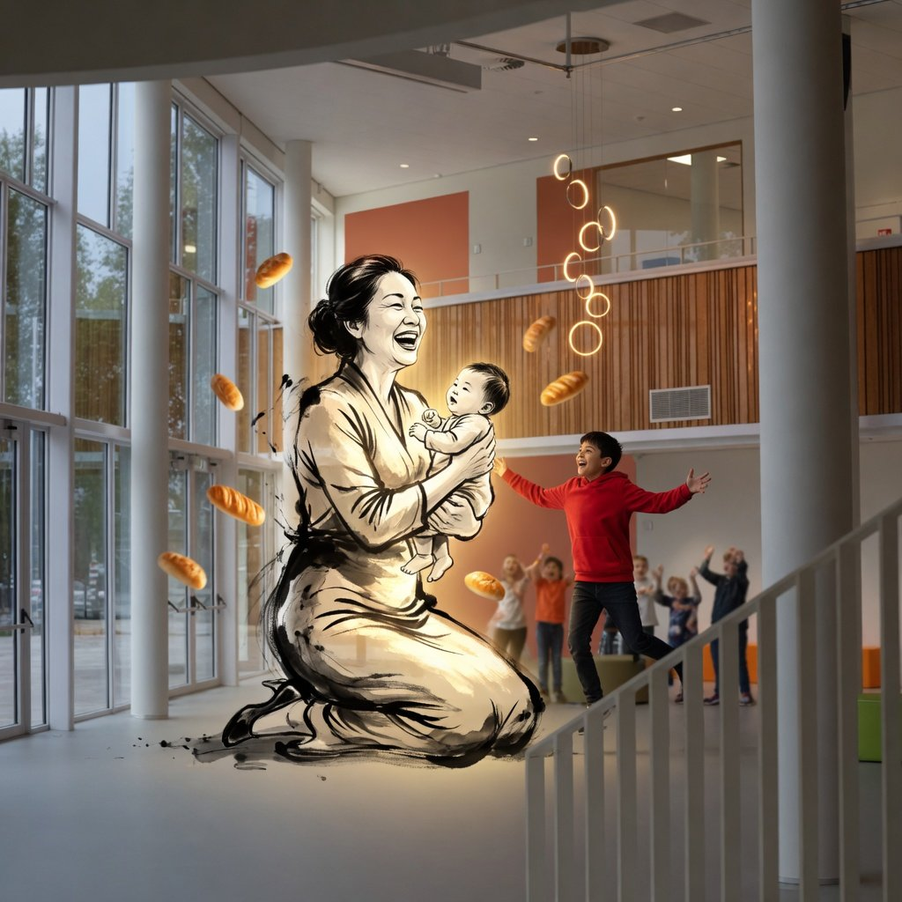
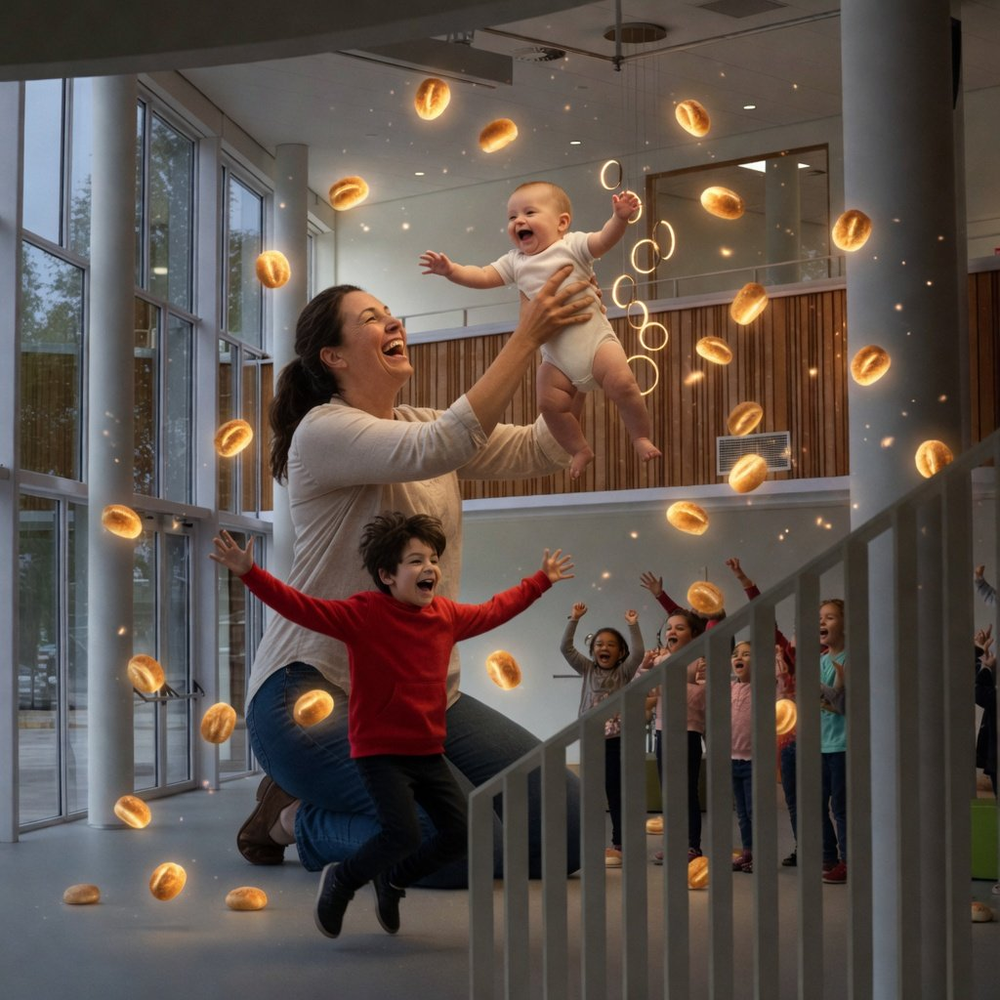
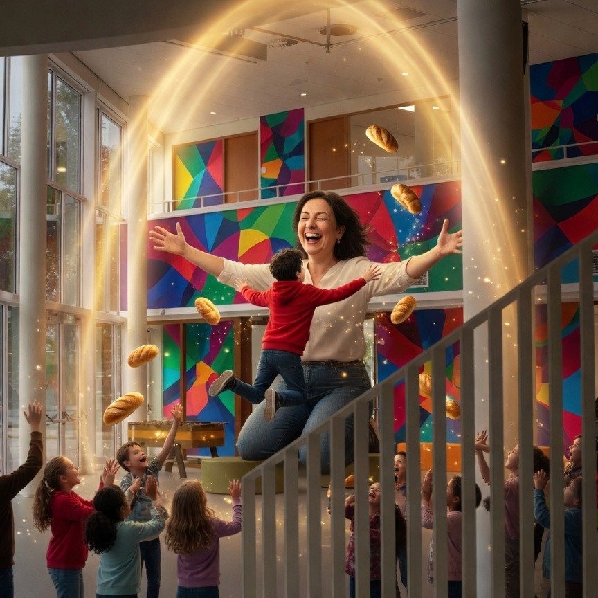
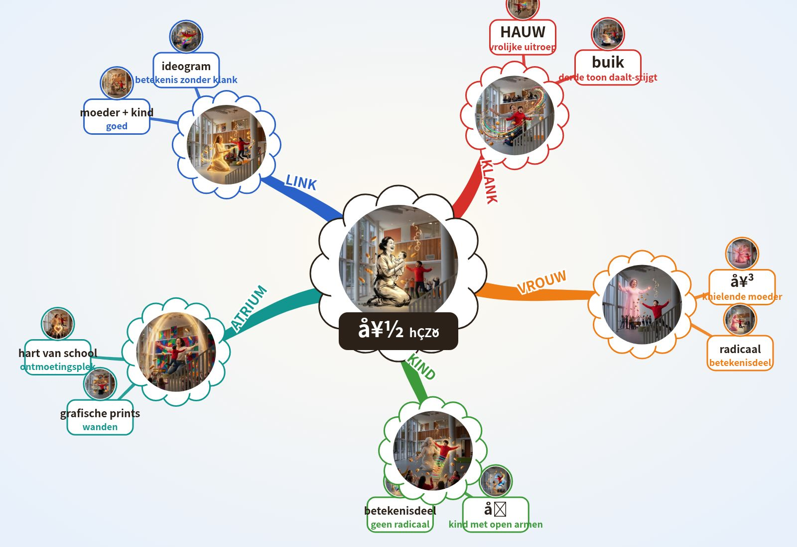

好
goed, fijn
7 korte stappen · ongeveer 10 minuten
1 Kern · het woord
Pinyinhǎo
Toon3
Engelsgood, fine
Klank-haak · klinkt als
Chinees = moedertaalstem. NL/EN/ES = klank-haak, geen vertaling.
Beeld-haak
IK ben de moeder die mijn kind hoog optil, zodat de delen 女 (vrouw) en 子 (kind) zichtbaar samenkomen, en roep stralend 'Hǎo!' terwijl ik het zachtjes wieg.


Paleis-plek
Paleis · Lorentz Lyceum, Arnhem Zuid · stop 9 atrium
2 Klank
Tik een lettergreep: hij valt zoals de toon.
De derde toon daalt eerst en stijgt daarna: begin laag, zak nog iets, en veer dan omhoog als een vrolijke uitroep.
De 4 tonen
→ 1e hoog en vlak · ↗ 2e stijgt · ↘↗ 3e zakt en veert terug · ↘ 4e valt hard · licht = neutraal.
3 Geheugenbeeld
Doe het, zie het, voel het:
Hurk laag, veer omhoog en til je armen alsof je een kind optilt; roep daarbij luid 'hǎo'.
Paleis · Lorentz Lyceum, 10 stops
- Spoorviaduct het hele station hangt boven de Metamorfosenallee
- Stationsgebouw verkeersgebouw van Edwin Megens, 2005
- Beschilderde pijlers muurschildering 2024: groen, geschiedenis, wijk
- Metalen gevel Lorentz gevelsysteem van Rakon (?)
- Cruijff-court kooiveld op het schoolplein
- Glaswand aula grote glazen buitenwand
- Zittrap brede trap die tribune is
- Vleugel vleugel in de aula
- Atrium hart van de school, grafische prints op de wanden
- Zwevende gymzaal sportzaal opgetild naar de 1e verdieping
O'Brien: N In het Atrium, het hart van het Lorentz Lyceum, zie ik op de wand de grafische print van een moeder die haar kind optilt; aan die plek koppel ik het teken 好.
Alleen echte, unieke kenmerken (monument-regel). (?) = niet zeker.
4 Schrift
女
女 (vrouw) radicaal/betekenisdeel · 子 (kind) betekenisdeel
Schrijfvolgorde
Tik op Oefen en teken streek 1.
Streken · namen
De hanzi bij elke streek is de officiële streeknaam uit elk Chinees schrijfboek, geen lesstof. Tik of houd de naam vast voor de betekenis.
Opbouw · 好 = 女 3 + 子 3
Rood = de nieuwe streek.
Vrij trekken (bord)
Geschiedenis
Twijfel
5 Radicaal · Familie
Radicaal
- 女nǚ vrouw
- 子zǐ kind
Familie
6 Actieve recall · oefenen
Snel ophalen · 6 manieren
Samen oefenen · organisatie
Wij dekken de kaart en tonen een plek. Jij haalt het woord op (zegt of doet).

Wij: cue + tijd. Jij: ophalen.
Recall-tabel
| Nr | Hersenen | Teken | Station | Volgende |
|---|
7 Herhaal-ladder
Druk GO: de kaart komt terug na een uur, een dag, een week, een maand, 3 maanden en een jaar.
uur · nog leeg
dag · nog leeg
week · nog leeg
maand · nog leeg
3m + 1j · nog leeg
Extra · voor gevorderden
Mindmap (Buzan) · tik een tak

● plek ● beeld ● woord ● toon
Gereedschap · 10 tools
Paleis-loop · deuren
1 · Deel 1: 女 knielende vrouw
Ik zie in 女 een knielende vrouw met gekruiste armen.
女nǚvrouw
2 · Deel 2: 子 kind met grote kop
Ik zie in 子 een kind met een groot hoofd en gespreide armen.
子zǐkind
3 · Centrum: 好 vrouw + kind = goed
Ik combineer 女 (vrouw) en 子 (kind) tot 好: een vrouw met een kind is goed.
好hǎogoed, fijn
4 · Paleis: Atrium print moeder tilt kind op
Ik sta in het Atrium, zie de grafische print van een moeder die haar kind optilt, en koppel hier 好.
好hǎo
Eén adem
女。子。好。好。
Eerst ophalen
好, 好, 子, 女.
Kijk nu bij stap 1.
Open de deuren hierboven om te vergelijken.
BEELD
Welk teken?